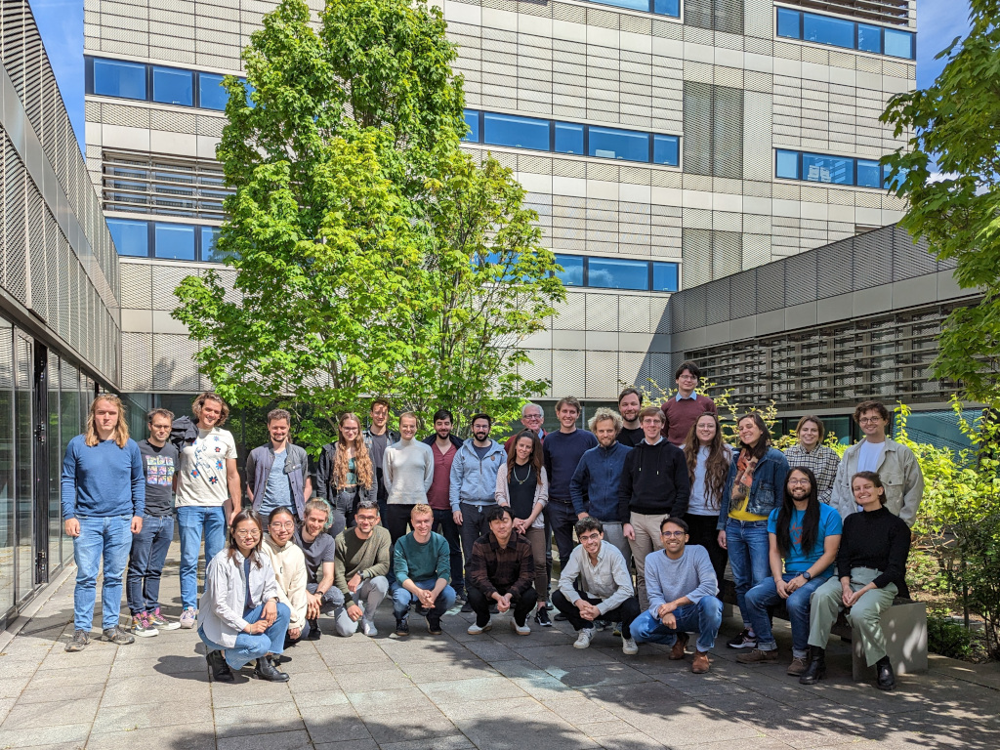

classDiagram
class AbstractAnnData {
abstract Matrix X
abstract List~Matrix~ layers
abstract DataFrame obs
abstract DataFrame var
abstract Array~String~ obs_names
abstract Array~String~ var_names
int n_obs()
int n_vars()
to_SingleCellExperiment() SingleCellExperiment
to_Seurat() SeuratObject
to_HDF5AnnData() HDF5AnnData
to_InMemoryAnnData() InMemoryAnnData
}
AbstractAnnData <|-- HDF5AnnData
class HDF5AnnData {
-H5File .h5file
init(path, obs_names, var_names, X, layers, obs, var) HDF5AnnData
}
AbstractAnnData <|-- InMemoryAnnData
class InMemoryAnnData {
-Matrix .X
-List~Matrix~ .layers
-DataFrame .obs
-DataFrame .var
-Array~String~ .obs_names
-Array~String~ .var_names
init(X, obs_names, var_names, X, layers, obs, var) InMemoryAnnData
}
class anndataR {
from_SingleCellExperiment(sce, backend) AbstractAnnData
from_Seurat(obj, backend) AbstractAnnData
}
anndataR --> AbstractAnnData
anndataR at the scverse 2023-04 hackathon
A deep dive into the development of anndataR
Data science
Last month I had the privilege of participating in the scverse Hackathon in Heidelberg hosted by the Stegle and Saez labs. It was an exhilarating event packed with exciting developments, intense coding, inspiring collaborations, and of course, pizza. The hackathon’s central themes were enhancing AnnData operability across programming languages, and improving the integration of biological information into the AnnData file format.

Our team, which consisted of Martin Morgan (@mtmorgan), Luke Zappia (@lazappi), Louise Deconinck (@LouiseDck), Danila Bredikhin (@gtca), and myself (@rcannood), dedicated our efforts towards bridging the gap between .h5ad files and the R / Bioconductor ecosystem.
AnnData in R
Our ultimate goal was an implementation of AnnData in R that would allow us to read, edit, and write .h5ad files, and convert them to SingleCellExperiment or SeuratObject objects. To achieve this, we outlined a set of minimal requirements based on our combined use cases:
Requirement 1: Use a native HDF5 library. We aimed for a solution that utilized an HDF5 library like hdf5r or rhdf5 to read or write data from .h5ad files. This native approach would prevent challenges related to installing Python dependencies from R and converting Python objects to R, which could arise when using an inter-language interface such as reticulate. Packages with native h5ad readers: h5ad, MuData, SeuratDisk, MuDataSeurat.
Requirement 2: Mimic existingAnnData interface. Despite several R packages that directly convert an .h5ad file into a SingleCellExperiment or SeuratObject, the data structures of AnnData objects do not map perfectly to those of SingleCellExperiment and SeuratObject. Consequently, a direct conversion inadvertently results in data loss. As such, we prefer data structures and interfaces that emulate a Python AnnData object as closely as possible. Packages with AnnData-like interfaces: h5ad, anndata for R.
Requirement 3: Allow converting to common R data structures. Both SingleCellExperiment and SeuratObject are associated with a wide range of existing tools and packages for data analysis and visualization. By offering converters to these structures, users can easily leverage these tools for their .h5ad data.
Existing approaches
We evaluated the strengths and limitations of existing solutions for handling .h5ad files in R. Unfortunately, none of them fully satisfied our minimal requirements. Moreover, each package had a significant list of known issues or was too limited in scope.
| Name | Backend | Data structures | Converters |
|---|---|---|---|
| zellkonverter | reticulate | SingleCellExperiment | Implicit |
| h5ad | rhdf5 | AnnData | None |
| anndata for R | reticulate | AnnData | None |
| MuData | rhdf5 | SingleCellExperiment | Implicit |
| sceasy | reticulate | None | Seurat & SingleCellExperiment |
| SeuratDisk | hdf5r | Seurat | Implicit |
| MuDataSeurat | hdf5r | Seurat | Implicit |
To better address our needs, we set about developing yet another AnnData for R package that fulfills each of our requirements. We identified the following strategies to avoid common pitfalls:
- Understand the AnnData HDF5 on-disk format: Start by gaining an in-depth understanding of the AnnData HDF5 on-disk format. Knowing the specifications and how the data is organized in
.h5adfiles will help in designing effective internal data structures and interfaces. - Implement rigorous testing: Implement a comprehensive suite of unit tests for individual data structures and functions. This can help catch and fix bugs early in the development process, and ensures that the package continues to work correctly as changes and updates are made.
- Learn from existing implementations: Use the combined experience gained from developing and using
zellkonverter,h5ad,anndata for RandMuData. - Plan for flexibility: Consider how the package might be used in various workflows and aim for flexibility.
Introducing anndataR
anndataR is an R package engineered to bridge the gap between the Python-based AnnData and the R ecosystem. It provides an interface for handling backed h5ad files, directly accessing various slots, and converting the data into SingleCellExperiment and Seurat objects. As part of the hackathon, we had set ourselves the goal to only include the X, obs, var and layers slots for now.
Since the functions to_SingleCellExperiment() and to_Seurat() are defined in the AbstractAnnData class, we can seamlessly implement other backends such as a ZarrAnnData and ReticulateAnnData and conveniently convert them into different file formats. Note that the X, layers, obs, var, obs_names and var_names are in reality active bindings; while they appear as variables to the end-user, the HDF5AnnData and InMemoryAnnData should have their own implementation for reading data from / to these slots.
Demo
Below is a simple demonstration of how to use anndataR:
library(anndataR)
# Download a sample h5ad file
download.file("https://github.com/chanzuckerberg/cellxgene/raw/main/example-dataset/pbmc3k.h5ad", "pbmc3k.h5ad")
# Read an h5ad file
adata <- HDF5AnnData$new("pbmc3k.h5ad")
# Access AnnData slots
adata$X
adata$obs
adata$var
# Convert the AnnData object to a SingleCellExperiment object
sce <- adata$to_SingleCellExperiment()
# Convert the AnnData object to a Seurat object
obj <- adata$to_Seurat()Looking ahead
At the scverse hackathon, we developed the initial version of anndataR, and we’re still actively enhancing it. Our aim is for it to fully replace zellkonverter, h5ad and anndata for R, and serve as a basis for interacting with SpatialData and MuData objects in R.
The scverse Hackathon 2023 was a remarkable event, and I’m grateful for the opportunity to have been a part of it. The development of anndataR is an ongoing process, and we’re excited about the potential this package has to offer. If you’re interested in contributing, feel free to check out the project on GitHub.
Stay tuned for more updates on our ongoing projects and initiatives, and happy coding!